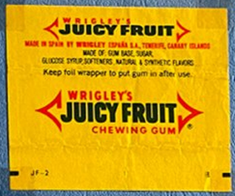
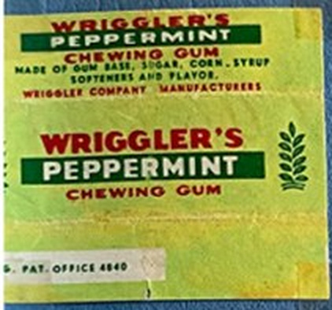
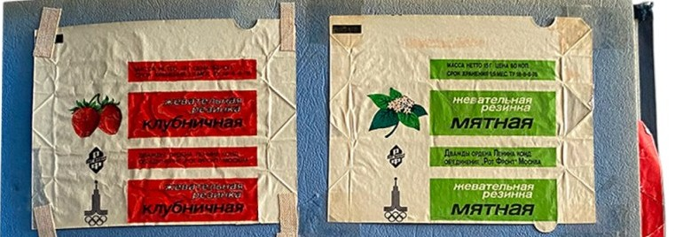
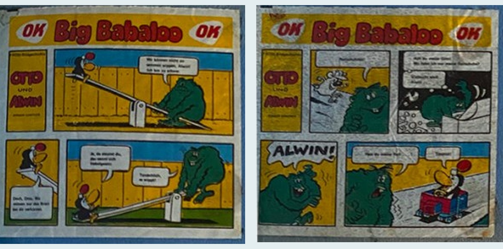
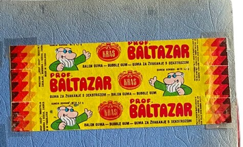
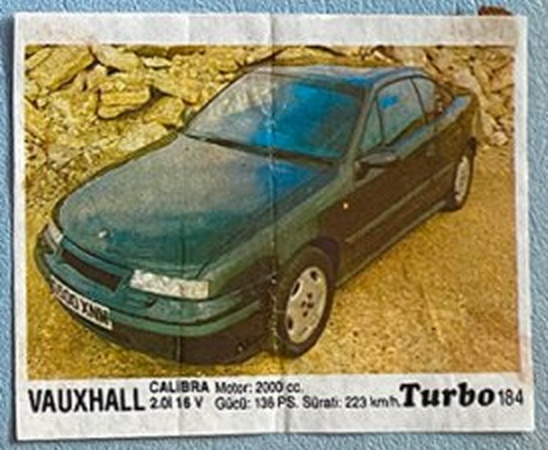
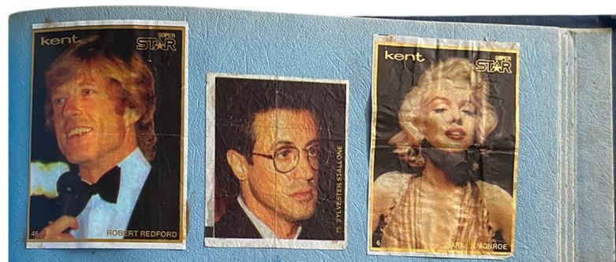
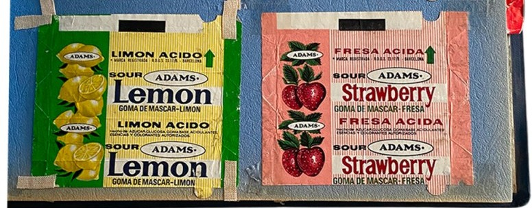
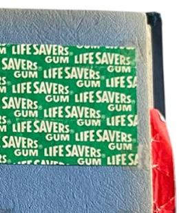
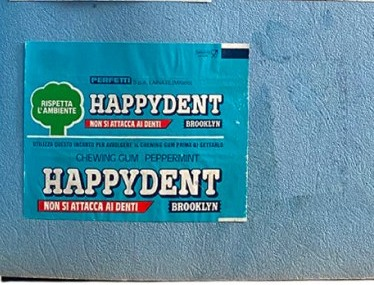

Research edition. Revised October 24, 2026.
Basis: a family album of wrappers and inserts collected in Chelyabinsk and during trips; photographs supplied by the archive owner. Initial inventory: 24 page images and 145 provisional records. The number of records is not the number of unique physical objects: there are repeated photographs of pages, multipart wrappers, and records of traces left by missing items.
Main finding: the collection documents several coexisting models of graphic communication rather than a single “old chewing gum” style: brand systems with consistent color codes; functional industrial typography; illustrated comics; licensed characters; photographic collector cards; and experimental, brightly colored commercial graphics of the 1980s and 1990s. Most individual packages cannot yet be dated to a specific year, but the manufacturer, country, or production period is known for a number of series.
1. What is being studied, and how dates are established
The album has blue textured pages and a cover bearing a sepia photograph of Moscow captioned “Moscow. Moskvoretsky Bridge.” Its pages bring together wrappers, unfolded wrappers, inserts, separate photographs, illustrations, and possibly individual pieces of confectionery packaging. The objects are attached with adhesive tape; distorted paper and empty spaces are visible in places. Neither the cover nor the album format reliably dates the beginning of the collection.
Three different kinds of date must be kept distinct. A brand’s launch year, such as Juicy Fruit in 1893, does not establish when a surviving wrapper was manufactured. A character’s first appearance, such as Professor Baltazar in 1967, does not date licensed packaging featuring that character. The launch year of a car model pictured on a Turbo insert likewise does not equal the insert’s printing date. [S01; S12; S11]
The following confidence scale is used. High: the country or company is explicitly named on the visible surface, or the object can be matched unambiguously to a documented numbered series. Medium: legible identifying features and an independent catalog are available, but an identical dated print run has not been found. Low: dating or geographical attribution rests only on language and style; this is a hypothesis to investigate, not an established historical fact.
Terms such as “modernist grid,” “Pop Art,” and “postmodern typography” indicate formal comparisons. A wrapper cannot automatically be attributed to Bauhaus artists, the Memphis group, or Pop Art simply because it uses stripes, repetition, or bright colors. Authorship requires separate documentary evidence. [S16; S17; S18]
2. A brief, verifiable chronology
1893. Juicy Fruit and Spearmint appear in the United States. Recognizable product names and color signals are already taking shape in their packaging. [S01]
1914. Doublemint joins the Wrigley’s range. Green tones and the theme of “doubling” subsequently become distinctive features of the brand’s visual language. [S01]
1927–1939. The Danish manufacturer that later used the Dandy name begins making chewing gum in 1927; the Dandy brand appears in 1939. These dates concern the business and brand, not the particular yellow package in the album. [S03; S25]
1950s–1970s. An international typographic aesthetic spreads: strict grids, minimal decoration, sans-serif typefaces, and graphic hierarchy. The presence of these features on packaging does not prove a direct connection to the Swiss school. [S16]
1956. The Danish Stimorol brand appears; this does not date the album’s lemon wrapper with its striped logo. [S03]
1967. Zagreb Film creates Profesor Baltazar, a character who would later feature on numerous commercial products. [S12]
1974. On June 26, a pack of Wrigley’s becomes the first product scanned commercially using a UPC barcode in the United States. This marks a milestone in packaging’s transition from exclusively human-readable information to machine-readable identification. [S15; S28]
1977–1979. OK Kaugummi of Pinneberg helps establish production in Bernburg, East Germany. In 1979, Jürgen Günther draws 55 short Otto und Alwin stories for OK Big Babaloo gum; 50 are printed. [S04; S05; S20]
1979–1980. Rot Front establishes gum production for the Moscow Olympics; a specialist article dates the first batches of three flavors to June 1979. Vladimir Arsentyev designed the Games emblem. The printing date of each surviving unfolded wrapper remains unproven. [S06; S07; S08]
1981. The Memphis group’s first collection provides a vivid postmodern context: aggressive color contrasts, decorative geometry, and an ironic engagement with mass culture. Some wrappers’ resemblance to this aesthetic is not evidence that they were commissioned from Memphis. [S18]
1990–1991. A specialist catalog assigns Kent Turbo series nos. 121–190 approximately to this period; the album includes no. 184, featuring a Vauxhall Calibra. [S11]
3. Branded packaging as an early design system: Wrigley’s

The pages contain Juicy Fruit, Spearmint, Doublemint, Peppermint, and Orbit/Freedent from different markets. Their significance lies in the continuity of a basic visual grammar rather than their “vintage” appearance. The brand arrow combines text and graphic form: it directs reading, gathers the composition into a compact shape, and makes the package recognizable among others. Yellow Juicy Fruit and the green mint varieties distinguish product ranges before the small print is read.
The Wrigley’s name and flavor names repeat across the unfolded wrappers; this need not be a purely decorative decision. The paper wraps around the pack, concealing some markings when folded, so repetition increases the likelihood that the brand will remain visible. Straight horizontal layouts and consistent spacing between lines support reproduction across different markets.
The brand’s history demonstrates the value of continuity in form: its visual language has survived changes in printing technology, export versions, and local labeling requirements. Nevertheless, Wrigley’s Juicy Fruit marked “Made in England” and Doublemint carrying New Zealand labeling should not be assigned to the same production run without further evidence, even though they share a visual identity. [S01; S02]
4. Almost the same name, different manufacturers: Wriggler’s Peppermint

The pale green wrapper reads WRIGGLER’S, not Wrigley’s. This is a separate brand; the Gum Wrappers World archive places Wriggler Company Manufacturers wrappers in its Iran section. The visible surface shows English flavor wording, a red wordmark, saturated green, and a stylized botanical symbol. [S19]
Its resemblance to the classic Wrigley’s system can be described formally: a nearly identical name, a red heading, a green mint code, and a linear arrangement of text. This is a valuable example of how a familiar brand’s visual solutions become part of an international product category’s language. However, without trademark records and documentation of a legal dispute, calling it a “counterfeit” would be inappropriate.
Wriggler’s has its own record in the digital catalog. Merging it with Wrigley’s would distort both branding history and the collection’s geography.
5. Soviet industrial graphics: flavor codes and the 1980 Olympics

The white “Mint,” “Strawberry,” and “Orange” wrappers follow a shared system. Flavor is conveyed through a rectangular color panel: red, green, or orange. A berry or plant image functions as a pictogram rather than a standalone illustration. The words “chewing gum” repeat, retaining information on partially folded paper. Unprinted white areas make the text stand out and reduce visual clutter.
The Olympic emblem adds a distinct layer. The Olympic Studies Centre confirms that Vladimir Arsentyev designed the Moscow 1980 emblem. This credits him with the emblem, not with the design of the wrappers themselves. Rot Front did develop gum production for the Games. According to Unipack, the first three flavors were manufactured in June 1979. The most defensible description is therefore: “a type associated with production for the 1980 Olympics; initial batches of these flavors are documented in 1979; the specimen’s precise print run is unknown.” [S06; S07; S08]
Comparison with Wrigley’s reveals a shared logic of standardization but different advertising hierarchies. In the Soviet version, flavor serves as the product name; in the American one, a stable combination of corporate name, sub-brand, and imagery takes the lead. Describing Soviet design simply as a “poor copy” is unfounded: its objectives, product range, and context were different.
6. Licensed illustration in East Germany: OK Big Babaloo

OK Big Babaloo and its Otto und Alwin comics form one of the album’s most securely attributed groups. Artist Jürgen Günther created the characters for FRÖSI magazine; in 1979 he drew 55 separate short stories for the gum, of which 50 were published. Sources confirm the artist’s identity and the series’ history. The production context is particularly revealing: the West German OK brand collaborated with East German enterprises. [S04; S05; S20]
Within a small area, the image is divided into sequential panels. Each scene has one central gag: a collision or an unexpected twist. The characters rely on strong silhouettes, simplified faces, clear black outlines, and limited areas of flat color. This visual approach suits miniature printing, where complex hatching and fine detail would be lost.
This is an example of design that sustains attention through a series. A purchase offers both a flavor and the next episode of a story. To obtain different mini-comics, the buyer purchases several units. Significantly, OK Big Babaloo had locally authored material, rather than relying solely on ready-made Western characters.
OK Chewing Gum Sour, made at the West German factory in Pinneberg, is shown separately. The Hungarian Museum of Trade holds comparable packaging and dates the type to the 1970s–1980s. OK thus appears in the archive both as functional packaging and as a vehicle for an artist’s comic. [S14]
7. The Zagreb School of Animation on packaging: Kraš Prof. Baltazar

The yellow Kraš wrapper shows Professor Baltazar, a character from Zagreb Film’s animated films. The first film was made in 1967, and production of the series continued until 1978. The Croatian film lexicon places it within the Zagreb School of Animation. [S12; S27]
Here, the comic effect does not depend on lettering alone: the character’s body has itself become a sign. His recognizable head, glasses, and pose distinguish him from an ordinary fruit illustration. A yellow background, a red zigzag border, and a large Prof. Baltazar title give him an advertising “stage” while preserving the Kraš brand area.
Historically, this differs from Wrigley’s approach. Identity is built through an external character from an existing media work, rather than exclusively through a proprietary brand mark. However, 1967 dates the character’s debut; the surviving wrapper still has no independently established date.
8. Cars and stars: Kent Turbo, Oto Moto, and Super Star

Turbo no. 184 carries a series number, a photograph of a Vauxhall Calibra, the model name, and technical specifications along the bottom. The balance of image and information resembles a compact car reference guide: a large photograph offers spectacle, small numerical data allow comparisons, and a number establishes the idea of a complete collection. A specialist catalog dates the third Turbo series, nos. 121–190, to 1990–1991. This is stronger evidence than an attempt to date the insert from the car model pictured. [S11]
Kent Oto Moto no. 31, featuring a Volkswagen Corrado, uses a more expressive yellow background instead of a relatively neutral photographic presentation. It bears the number 31 and a different logo design. Without an archival record for this exact series, the edition should describe it as “early 1990s, provisional attribution.”

Kent Super Star brings the celebrity-card format to chewing gum: photographs are accompanied by names, numbers, and sometimes borders. The album photographs show cards labeled Robert Redford and Bobby McFerrin; other portraits require further identification. A person’s age in a photograph reveals nothing about when the card was printed. Here, the product sells an association with celebrity, while the card becomes a souvenir and an item to trade.
This group reveals two uses of imagery: a reference photograph of a car and a media portrait. In both cases, series numbering extends the product’s life beyond purchase by encouraging the desire to complete a set.
9. Color as a language of flavor, and its limits

The album repeatedly pairs green with mint, yellow with lemon or fruit, red with strawberry or cherry, and orange with orange flavor. This is visible in the Soviet varieties, Adams Sour Lemon / Fresa Ácida, HaTai Apple / Grape, and Dandy Strawberry / Orange. Comparison shows that packaging from different markets uses similar color–flavor signals. Yet these meanings are not universal and allow local variations.
Adams wrappers carry bilingual or multilingual wording: Sour, Strawberry / Fraise; Lemon / Limón Ácido. The largest text delivers the primary message, while translated lines address other markets. Repeating the fruit image and word vertically reinforces the flavor association regardless of the language being read.
A second feature is the separation of color and illustration: a small fruit acts as semantic confirmation of the name, but a large area of color provides the main emotional impact. On Dandy Tutti-Frutti, the fruit collage occupies a relatively small area; the yellow surface and red wordmark attract attention before close inspection.
10. Typography, modular grids, and repetition
On some wrappers—Clark’s Long Chew, Velim Peppermint, and Kraš Spearmint—hierarchy is organized almost entirely through type. Separate typographic modules sit on horizontal axes; colored bands distinguish the manufacturer, product type, and flavor. Their formal affinity with functionalist approaches reflects economical use of graphic elements, but does not establish a commission from a particular modernist school. The Swiss International Style of the 1950s–1970s did emphasize grids, asymmetry, and legible typography; it provides a relevant historical context for comparison rather than evidence of origin. [S16]

Life Savers Gum takes the opposite approach: the name repeats across the entire surface, creating an almost textile-like texture. This all-over pattern fills the wrapper consistently regardless of which portion remains visible after folding. Frucht 0,05 M uses a related compositional idea, repeating fruit in a diamond-shaped structure. [S29]
In graphic design terms, the sequence is “name → element → module → pattern.” Packaging changes from a plane bearing a single inscription into a surface that reads as a unified texture. Formally, this relates to the seriality and repetition of mass visual culture discussed in connection with Pop Art; direct artistic borrowing has not been demonstrated. [S17]
11. Postmodern expression and design in the 1980s–1990s
Traditional retail packaging seeks above all to organize its message. Happy Fant and Kent Super Star show a different priority: bright contrasts, layered display lettering, unconventional letterforms, and decorative stars attract the eye regardless of the small print’s legibility.
These techniques can be compared with the decorative postmodern culture of the 1980s, including Memphis, whose first collection appeared in 1981. However, Kent Super Star is not a documented Memphis design. An appropriate description is: “comparable formal features: a saturated palette, decorative geometry, and playful use of commercial typographic codes.” [S18]
At the same time, the older typographic systems of Wrigley’s, Clark’s, and Dandy persist. Styles therefore do not replace one another instantaneously. The album pages show the simultaneous presence of conservative branding, functional graphics, and entertaining popular culture.
12. Functional positioning and “healthy” packaging

Happydent Brooklyn carries the Italian phrase Non si attacca ai denti—“does not stick to teeth.” The central message here is a claimed functional property. A turquoise palette, white typography, and compact information blocks create an image of hygiene rather than entertainment. Perfetti Van Melle associates Happydent’s development with the 1970s and the spread of functional gums with the 1980s. This does not precisely date our specimen. [S13; S21]
A similar tendency appears on OK Gum Sour and some Wrigley’s products: packaging carries information about wrapper disposal, freshness, and product properties. Such messages turn the wrapper into a short guide to behavior as well as a product label.
13. One album, several cultures and markets
The Dandy Tutti-Frutti wrapper reads Made in Iraq by The National Confectionery Products Co. W.L.L., although Dandy is a Danish brand. It demonstrates the distinction between a brand’s origin and its manufacturing location. Other pages contain Made in Czechoslovakia (Velim), Made in New Zealand (Doublemint), Made in England (Juicy Fruit), Algerian wording on May Chlorophylle / Globo, Korean HaiTai names, Chinese Shanghai graphics, and Turkish CinCin and Kent wording. [S03; S25; S29]
The global circulation of visual signs cannot be reduced to the transmission of an American model. The album also contains media creations from socialist countries: Germany’s Otto und Alwin, Yugoslavia’s Professor Baltazar, and the Soviet Olympic system. Differences in illustration, spelling, dimensions, and legal labeling show that chewing gum’s spread was accompanied by local adaptations of form.
An important limitation: a country-of-manufacture statement does not establish the place of purchase. The collection was assembled by the author’s mother in Chelyabinsk and during trips, but the specific routes and dates associated with each object still require oral testimony. Keeping separate catalog fields for “country of manufacture” and “place acquired” is essential.
14. Packaging technology as part of design
Several specimens are unfolded strips with visible creases. They allow us to reconstruct not only the flat graphic design but also the viewer’s path through it while using the product. Repeated names become understandable: after several turns of the paper, different sides expose different parts of the layout.
Some wrappers show a limited number of colors, dense flat areas, and simplified illustrations. Nevertheless, a photograph cannot reliably identify the printing process: visible halftone dots do not automatically establish offset, flexographic, or gravure printing. Reliable technical analysis requires macro photographs of the screen pattern and examination of the surface, paper, and metallized layer.
Adhesive tape and folds are not “clutter” that must necessarily be retouched away. They testify to a particular moment in the album’s creation and to the way the collection was preserved. An archive should retain two representations: a documentary page photograph with its traces intact and a clean detail photograph of an individual specimen. This follows the museum practice of documenting everyday ephemera. [S09; S10]
The barcode on Stimorol also helps investigate chronology, but its presence alone does not prove a particular year. The general history of machine-readable labeling is known: the first commercial UPC scan of chewing gum took place on June 26, 1974. [S15; S28]
15. Collectible images that are not chewing gum
The pages include photographs of a squirrel and a gazelle with scientific captions, cards depicting a Rolls-Royce car and a Harrier aircraft, portraits, and film stills. They also contain FruLipo, a pressed fruit confection, as indicated directly by the words Ovocný Komprimát. The entire album therefore cannot be assumed to be a specialized collection of chewing gum packaging. It is more accurately described as an archive of small printed objects assembled around chewing gum and inserts.
Dates in car captions, such as 1934 for the Rolls-Royce, refer to the vehicle depicted, not the insert’s manufacture. Celebrities’ life dates likewise do not date a series. This methodological error is particularly hazardous when publishing digital catalogs.
16. Cataloging, preservation ethics, and further verification
The catalog contains 145 provisional records. This is a list of distinguishable visual positions in photographs, not a physical count of exhibits. Some images repeat pages; these rows are marked. Elsewhere, the recorded unit is a strip of wrapper containing several repetitions of one flavor, rather than each printed block.
The most useful evidence for improving dating would be the reverse of every wrapper, including the factory’s legal name and address; close-up photographs of numbers and series markings; exact width and height in millimeters; the paper or foil type, particularly around folds; and the collector’s account of where and when objects were acquired. An interview with the author’s mother should also be recorded, but her recollections must be accompanied by the recording date and should not replace archival production evidence.
Practical sequence: (1) number the pages and provisional objects; (2) photograph them in good light without perspective distortion; (3) verify the name and manufacturer; (4) find a dated advertisement or museum counterpart; (5) establish a date range and confidence level; (6) publish both image versions—the object and its album page; (7) retain a history of attribution corrections.
17. Conclusion
This family collection reveals packaging history through a miniature format that is rarely preserved: an individual wrapper, paper insert, or small card. Its strength lies in the opportunity to compare specific commercial ways of directing attention. Color indicates flavor; an arrow reinforces a brand; a pattern creates a recognizable surface; a comic builds anticipation for the next installment; a photograph brings the product into collecting culture; informational typography communicates ingredients and properties; and a barcode connects packaging to retail infrastructure.
Local graphic traditions share some pages, while the brand systems of multinational companies appear on others. Reliable historical anchors have already been established: 1893 for Wrigley’s Juicy Fruit / Spearmint; 1967 for the beginning of the Baltazar animation; 1979 for Otto und Alwin on OK Big Babaloo and Rot Front’s preparations for the Olympics; and 1990–1991 for Kent Turbo nos. 121–190. Nevertheless, none of these years can automatically be entered as an individual wrapper’s production year unless the corresponding print run has been identified.
A digital edition can also reveal the structure of family memory itself: tape, gaps, uneven spacing, and arbitrary juxtapositions. The archive can then become more than a catalog of advertising pictures: an independent study of the interaction between graphic design, commerce, collecting, and personal experience.
APPENDIX A. Historical cases and their evidential status
| Object | Confirmed historical fact | Dating of our specimen | Status |
|---|---|---|---|
| Wrigley’s Juicy Fruit / Spearmint | Brands launched in 1893 [S01] | Exact print run unknown | Brand identified |
| WRIGGLER’S Peppermint | Separate brand; collector catalog assigns it to Iran [S19] | Unknown | Name identified; country probable |
| Wrigley’s Doublemint | Brand dates from 1914 [S01] | Unknown | New Zealand is legible on the wrapper |
| “Strawberry” / “Mint” / “Orange” | Rot Front developed production for the 1980 Olympics; first batches in 1979 [S06; S07] | No more precise than “around the turn of the 1980s or later” | Factory and visual context identified |
| OK Big Babaloo, Otto und Alwin | Günther’s illustrations, 1979 [S04; S05] | 1979 series; date of this impression unknown | High confidence for the series |
| OK Sour | Museum counterpart dated to the 1970s–1980s [S14] | Provisionally 1970s–1980s | Medium to high confidence for the type |
| Dandy Tutti-Frutti (Made in Iraq) | Danish Dandy brand dates from 1939 [S03] | Date of Iraqi wrapper unknown | High confidence in stated country |
| Kraš Profesor Baltazar | Character first appeared in 1967 [S12] | Date of licensed wrapper unknown | High confidence in character identification |
| Kent Turbo no. 184 | Part of series 121–190, catalog dates 1990–1991 [S11] | Probably 1990–1991 | High confidence for series; medium for print run |
| Kent Oto Moto no. 31 | Separate numbered car series | Early 1990s (hypothesis) | Medium to low confidence |
| Happydent Brooklyn | Happydent among 1970s brands; functional gums in the 1980s [S13] | Unknown | Only the brand’s historical range is established |
| Frucht 0,05 M | Wrapper bears a 0,05 M price and a diamond-shaped fruit repeat | Unknown | Origin requires verification |
| FruLipo | Object itself reads Ovocný Komprimát | Exact date unknown | Not chewing gum |
APPENDIX B. All original pages
The archive preserves 24 photographs of album pages, including repeated images of the same spread. The original user-supplied photographs have not been edited to remove tape or traces of storage. The digital archive provides a searchable entry for every provisional catalog position; the spreadsheet offers filtering, fields for country, date, type, and confidence, and sources.
SOURCES
S01. Mars: official Wrigley history (1893, 1914). https://www.mars.com/de-de/news-and-stories/articles/Kaugummi_von_Mars_Wrigley
S02. University of Chicago Library: Wrigley Spearmen and advertising history. https://www.lib.uchicago.edu/collex/exhibits/sweet-home-chicago/history-chocolate-and-candy-making-chicago/wrigley-spearmen-work-and-play/
S03. Mondelēz: history of Dandy, 1927 and 1939, and Stimorol, 1956. https://www.mondelezinternational.com/about-us/who-we-are/our-history/
S04. OK Big Babaloo: Jürgen Günther, biography, 1979. https://www.bundesstiftung-aufarbeitung.de/de/recherche/kataloge-datenbanken/biographische-datenbanken/juergen-guenther
S05. Otto und Alwin: catalog of 50 comics. https://www.ddr-comics.de/otto.htm
S06. Rot Front: official history of production for the 1980 Olympics. https://www.uniconf.ru/factories/rot-front/history/
S07. Unipack: first batches in June 1979. https://article.unipack.ru/30884/
S08. Olympic Studies Centre: Moscow 1980 emblem. https://library.olympics.com/digitalCollection/DigitalCollectionAttachmentDownloadHandler.ashx?documentId=735245&parentDocumentId=161836&skipCopyright=true&skipWatermark=true
S09. Museum of Brands: packaging and ephemera collection. https://museumofbrands.com/collections/overview-of-the-collections/
S10. Museum der Dinge: EPHEMERA and the rationale for collecting. https://museumderdinge.org/exhibitions/ephemera-advertising-graphics-from-the-collection-of-documents-of-everyday-culture/
S11. Bubble Gum Wrappers: Turbo 121–190, 1990–1991. https://b-g-w.blogspot.com/2015/08/kent-turbo-121-190.html
S12. Hrvatski filmski leksikon: Profesor Baltazar, 1967–1978. https://film.lzmk.hr/clanak/profesor-baltazar
S13. Official Perfetti history: Happydent and Brooklyn. https://www.perfettivanmelle.it/chi-siamo/la-nostra-storia/
S14. Hungarian Museum of Trade: OK Sour, 1970s–1980s. https://mandadb.hu/tetel/753692/OK_Chewing_Gum_Sour_ragogumi_comagoloanyag
S15. National Museum of American History: first UPC scan, 1974. https://americanhistory.si.edu/de/collections/object/nmah_892778
S16. Swiss National Library: International Typographic Style, 1950–1970. https://www.nb.admin.ch/en/the-international-style-1950-1970
S17. MoMA: Pop Art and the visual culture of consumption. https://www.moma.org/collection/terms/pop-art/consumer-goods-mass-media-and-popular-culture
S18. Vitra Design Museum: Memphis, 1981–1987. https://www.design-museum.de/en/exhibitions/detailpages/memphis-40-years-of-kitsch-and-elegance.html
S19. Gum Wrappers World: Iran, Wriggler Company Manufacturers. https://gww.su/en/iran-sticks/
S20. NDR: the OK factory and West/East German cooperation, 1977–1978. https://www.ndr.de/geschichte/chronologie/ok-kaugummis-aus-pinneberg-begeisterten-mit-sammelbildchen%2Czeitreise607.html
S21. Perfetti Van Melle: history of brands and functional gums. https://www.perfettivanmelle.com/who-we-are/our-history/
S22. National Museum of Brands: historical methods of comparison. https://museumofbrands.com/portfolio-item/brand-histories-1209/
S23. US Mint Industry: history of the American chewing gum market. https://www.usmintindustry.com/mint-resources/history-of-chewing-gum/
S24. Smithsonian: history of industrial scanning. https://www.si.edu/object/supermarket-scanner%3Anmah_892778
S25. Bagger-Sørensen: history of Danish brands. https://baggersorensen.com/about-us/
S26. Kraš Group: historical periods. https://kras.hr/en/about-us/about-us/history-of-kras/1980
S27. HRT: Zagreb animation history and the creators of Baltazar. https://magazin.hrt.hr/zabava/profesor-baltazar-bezvremenski-klasik-animiranog-filma-0-12731021
S28. GS1: the first purchase using a UPC code. https://documents.gs1us.org/adobe/assets/deliver/urn%3Aaaid%3Aaem%3Ac4cf7272-5367-4b51-b5b7-a6d61c2eab4f/GS1_US_50th_Barcode_Scan_Timeline_Infographic.pdf
S29. Author’s collection: photographs of the family album pages. Family album photographs; original files supplied by the user.
Sources reviewed on October 24, 2026. The reliability of each catalog entry is assessed separately; links to external resources do not confirm every hypothesis.